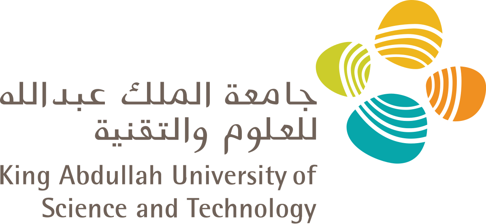
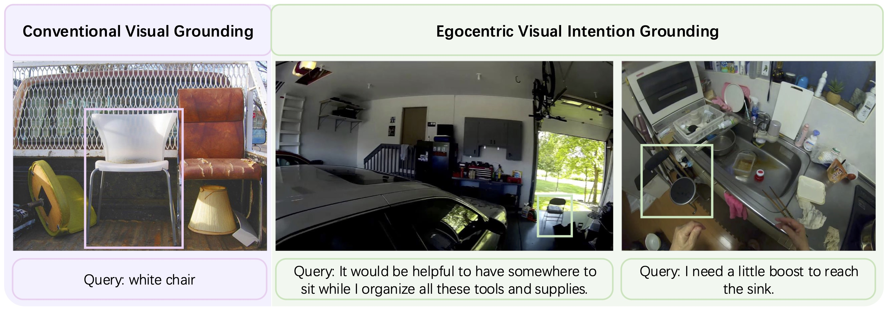
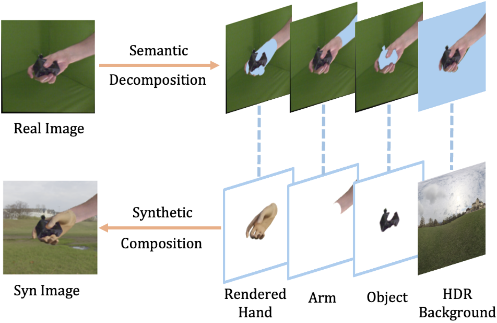
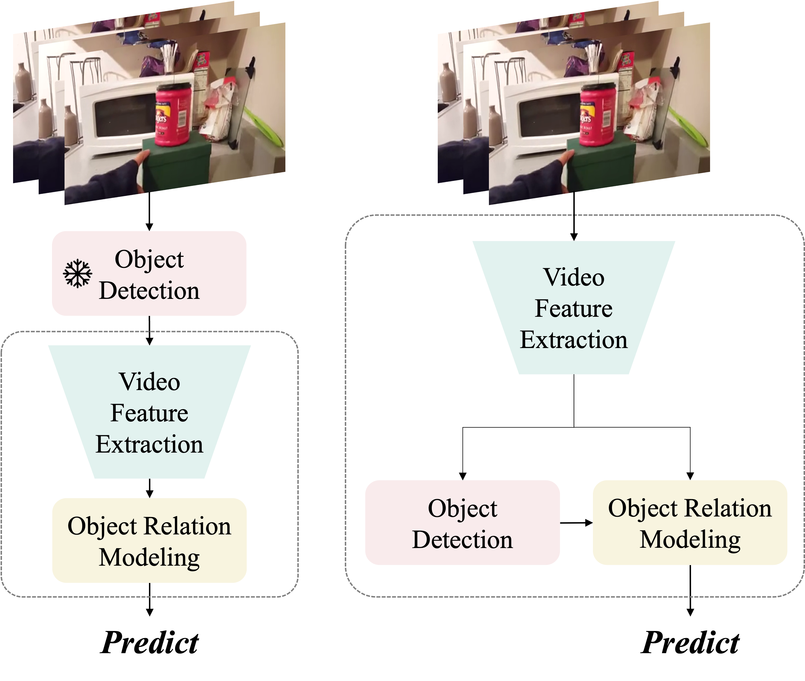
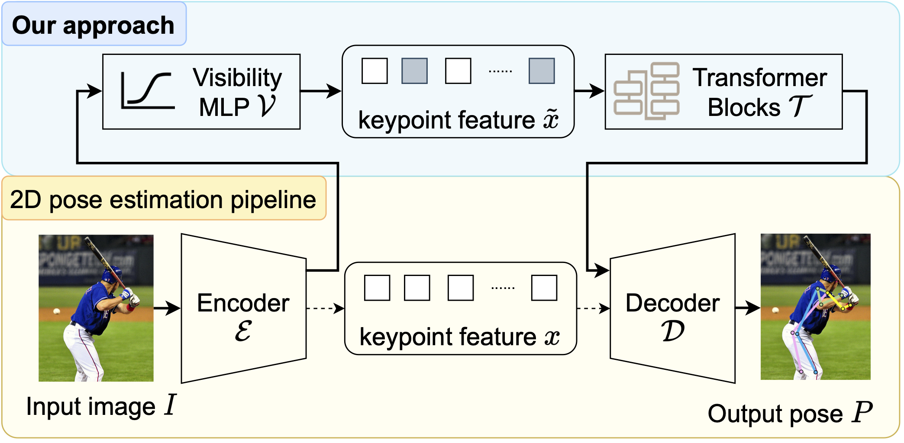
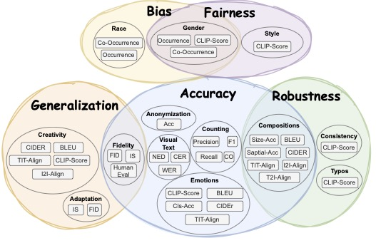

SUN, Pengzhan 孙鹏展
 |
SUN, Pengzhan |
About Me
I'm currently a Ph.D. student at National University of Singapore from 2024 Spring, a member of CVML@NUS.
I received B.S. degree (with Highest Honor) in Mathematics-Physics Fundamental Science from Yingcai Honors College at University of Electronic Science and Technology of China in 2022, supervised by Prof. Wen Li and Prof. Lixin Duan. I received Master of Computing in Artificial Intelligence from School of Computing, National University of Singapore in 2024, supervised by Prof. Angela Yao.
I focus on problems in machine learning and computer vision, where beautiful theory and practical methodology meet. My current research interests include but are not limited to 1) egocentric vision, 2) RL-finetuning VLMs, and 3) pose estimation.
Education
|
University of Electronic Science and Technology of China (UESTC), China Honours Bachelor Degree in Mathematics-Physics Fundamental Science (AI Specialization). Yingcai Honors College. • Sep. 2018 - Jun. 2022Lab: Data Intelligence Group Supervisors: Prof. Wen Li and Prof. Lixin Duan Collaborated with Dr. Bo Wu | |
|  |
King Abdullah University of Science and Technology (KAUST), Saudi Arabia Visiting Student Research Program. Computer, Electrical and Mathematical Sciences and Engineering. • Apr. 2022 - Aug. 2022Lab: Vision-CAIR Supervisor: Prof. Mohamed Elhoseiny Collaborated with Prof. Li Erran Li |
|
National University of Singapore (NUS), Singapore Graduate Student (with Dissertation Option). School of Computing. • Aug. 2022 - Jan. 2024PhD Student. School of Computing. • Jan. 2024 - Present Lab: CVML@NUS Supervisor: Prof. Angela Yao Collaborated with Prof. Linlin Yang and Dr. Junbin Xiao |
News
- [JUN 2025] One paper was accepted by ICCV 2025.
- [JUN 2025] I'm happy to share that I have passed my PhD Qualifying Exam and am now officially a PhD candidate.
- [FEB 2025] One paper was accepted by CVPR 2025.
- [DEC 2024] One paper was accepted by IEEE Transactions on Multimedia.
[JAN 2024] I was excited to join CVML@NUS as a 2024 Spring PhD student.
- [DEC 2023] One paper was accepted by AAAI 2024.
- [OCT 2023] One paper was accepted as oral presentation by WACV 2024.
- [JUL 2023] One paper was accepted by ICCV 2023.
- [APR 2022] I was happy to join Vision-CAIR at King Abdullah University of Science and Technology as a visiting research student, under the supervision of Prof. Mohamed Elhoseiny.
- [JUL 2021] My first paper was accepted by ACM MM 2021.
- [SEPT 2020] Became a member of Data Intelligence Group, University of Electronic Science and Technology of China, supervised by Prof. Lixin Duan and Prof. Wen Li.
Preprints
|  |
Visual Intention Grounding for Egocentric Assistants |
Publications
|  |
Analyzing the Synthetic-to-Real Domain Gap in 3D Hand Pose Estimation |
|  |
Simultaneous Detection and Interaction Reasoning for Object-Centric Action Recognition |
 |
ImageCaptioner2: Image Captioner for Image Captioning Bias Amplification Assessment |
|  |
Rethinking Visibility in Human Pose Estimation: Occluded Pose Reasoning via Transformers |
|  |
HRS-Bench: Holistic, Reliable and Scalable Benchmark for Text-to-Image Models |
 |
Counterfactual Debiasing Inference for Compositional Action Recognition. |
Services
Conference Reviewer:
- ICLR 2025
- NeurIPS 2024
- ACM-MM 2022,2023,2024
- ICCVW_CLVL (Closing the Loop between Vision and Language) 2023
- AAAI 2024,2025
- CVPR 2024,2025
- CVPRW_MMFM (what is next in MultiModal Foundation Models) 2024
- ECCV 2024
- ECCVW_HANDS (Observing and understanding hands in action) 2024
Journal Reviewer:
- IEEE Transactions on Image Processing (T-IP)
Teaching
- Spring 2021: Introduction to Artificial Intelligence, UESTC, Teaching Assistant
- Spring 2024: Computer Vision and Pattern Recognition, NUS, Teaching Assistant
- Fall 2025: Natural Language Processing, NUS, Teaching Assistant
Awards
- NUS Research Scholarship
- Excellent Undergraduate Graduation Project, School of Mathematical Sciences, UESTC
- Best Paper Award in Undergraduate Student Innovative Work Show, UESTC
- Outstanding Student Scholarship for three consecutive years, UESTC
Others
- I'm an ISFJ:)